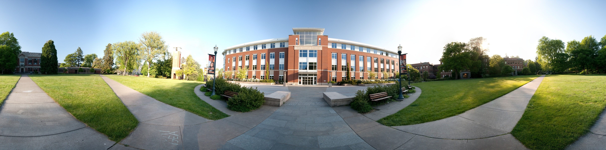

University of Oregon
General Information
The University of Oregon is located in Eugene, Oregon. Well known for its theory-based computer science courses, the University is well known for sports and has a more theory-based computer science program. The school is also an excellent place to build connections and also offers a class size of 20:1
Avalible Options
The options present for the University of Oregon Computer Science program include the MACS major, CIS major, CIT minor, CIS minor, and accelarated programs. Various scholarships and career opportunities are available for students, along with other rescources to help you persevere through the hardships of college.
Graduate Programs
At the University of Oregon's graduate programs, you can get a Master's Degree, Doctoral Degree, or the accelarated B.S/M.S program. Becoming a University professor typically requires a Master's degree, but rarely a Doctoral.
What Makes The American University of Oregon Stand Out
The University of Oregon provides various different rescources that drastically improve the quality of life for the students. Scholarships, internships, summer school, cybersecurity opportunities and can bring you closer from the role of a student to the role of a member in a team.
Four Year Example Schedule
For the Bachelor's Degree in CIS, The CIS major core courses, upper-division track and elective requirements, science, math and writing requirements, and you need to obtain a B- or higher in CIS 210-212/Math 231-232.